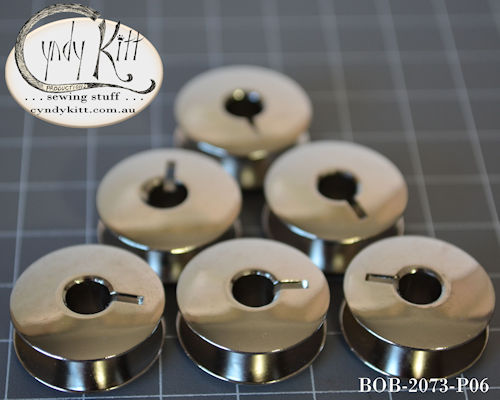
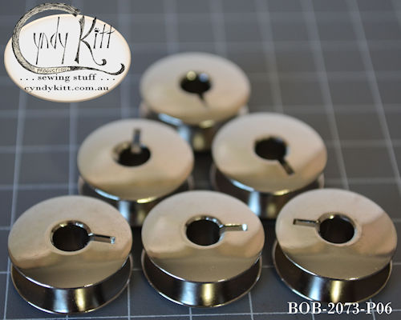

Philip H. Diehl invented the oscillating central bobbin (CB) shuttle for Singer in the late 1870s, and this was the basis of the Singer 15 class with the introduction of the 15-1 (AKA Improved Family) in 1879 a number of industrial models (17 and 18 class for shoe making as well as a number of 15 subclasses for specific garment industry applications). The fingered bobbin case for the oscillating hook was developed and patented in 1887, and this became the dominant bobbin, bobbin case and shuttle system for domestic machines in the 20th century after the Singer patent for the CB shuttle expired 20 years later.
By the 1920s, many of Singer's competitors-Pfaff (Model 31), Gritzner and many others in Germany, Brother (Model HA-1) in Japan-had incorporated the central bobbin shuttle in their models, and most companies offered a number of improvements to give them a competitive edge; Singer had the momentum of being the dominant brand and did not need to be innovative to sell machines but they did reinvent the wheel (so to speak) with the 15-88/15K88 (and the rest of the subclass family which only differs in how it is powered; 88 treadle, 89 being hand crank, 90 belt driven motor and 91 being the potted motor) in the early 1930s. For those who are unaware, "K" just means the machine was made at the Kilbowie factory in Scotland.
 

The 15-1, or "Improved Family", went into production in 1879. The upper tension, like later machines, is positioned on the face plate. Unlike later sub-models (except for the 15-22) it has a "long beak" oscillating shuttle rather than an oscilating hook shuttle with a bobbin case, with a finger. The bobbin is slightly thinner, but a similar shape, to the bobbin designed for the Model 66 (Singer part No. 172222).
CKP Parts available for long beak shuttle 15 class sewing machines:
Bobbin BOB-2073


Pictured above is a 15K26, it is typical of most early 20th century 15 class sub models up to and including the 15K80.
It takes a standard 1 o'clock 15 class CB shuttle, bobbin case and bobbins, and while not identical to the original check spring, a standard 15 class check spring works perfectly.
CKP Parts suitable for these 15 class sewing machines:
Shuttle SHD-2515
Bobbin case BCD-1527
Bobbin BOB-2518
Check-spring CSP-1500 or CSP-1530
Bobbin winder tyre BWP-RT01 (15K80) or BWP-RT02 (large for earlier models such as the 15K26 Spool pin OPD-H122
Spool felt OPD-8879